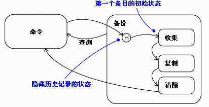

| 指南：关于状态表图和流程图的测试构想 |
 |
|
| 相关元素 |
|---|
简介本指南显示了如何从状态表图和其他设计结构中识别测试构想，上述状态表图和其他设计结构主要由弧线连接的节点组成，并且显示程序的可能控制流的某些内容。此测试的主要目标是在某个测试中穿越每个弧线。如果您从未使用过弧线，那么当客户使用时您为什么认为这将有作用？ 测试实施考虑以下状态表图：
图 1：HVAC 状态表图 下面是第一个测试构想列表：
这些测试构想都可以在一个测试中使用，或您可以创建若干测试，每一个使用几个测试构想。正如所有测试设计一样，努力在许多简单测试的易于实施和复杂测试的额外查找缺陷能力之间寻求一个平衡。（请参阅概念：测试构想列表页面中的“使用该列表的测试设计”。）如果您有通过状态表图描述某些路径的用例场景，您应多使用采用这些路径的测试。 在任何情况下，这些测试都应检查状态表图需要的所有操作是否实际发生。例如，进入“故障”状态时警报是否启动？然后在退出时停止？ 该测试还应检查该转移通向正确的下一个状态。当状态从外面不可见时，可能是一个困难的问题。检测不正确的状态的唯一方式是引入某些导致不正确输出的事件序列。更准确地说，您将需要构造紧挨着的一系列事件，它们的正确状态的外部可见结果与同一序列将从每个可能的 不正确状态产生的不正确结果不同。 在上述示例中，您将如何知道“故障”状态中的“故障已清除”事件会导致“空闲”状态，而不是停留在“故障”状态中？您可能信任“警报”的停止意味着已经进行了转移，但更好的检查方法可能是，足够降温以使加热器启动，或足够升温以打开冷却。如果发生某些情况，您会对转移的正确性更有信心。如果什么都不发生，可能设备仍处在“故障”状态。 至少，确定产生的状态是否正确使测试设计变得复杂。通常，更好的做法是使状态机为显式，并使其状态对于测试可见。 其他状态表图构造组成状态表图的不仅是弧线和箭头。下面是状态表图成分的列表，以及它们对测试构想列表的影响。 事件操作、进入操作和退出操作它们本身并不生成测试构想。而是测试应检查这些操作的行为和指定的一样。如果这些操作代表真正的程序，则必须测试这些程序。这些程序的测试构想可以与来自状态表图的测试构想相组合，但将它们分开可能更便于管理。基于进行的工作和事件之间可能有交互的怀疑做出此决策。即，如果对一个弧线的特定操作可能无法与对另一个弧线的一个操作共享数据，则没有理由在同一测试中使用这两个操作（如果它们是状态表图测试中同一路径的一部分，则可以使用）。 警戒条件警戒条件是布尔表达式。关于警戒条件的测试构想是如工作产品指南：关于布尔值和边界的测试构想中所述的那样而得出的。 在上述示例中，从“空闲”状态到“过凉”的转移使用 [restart time >= 5 mins] 警戒。这导致两个分开的测试构想：
在这两种情况下，使用该测试构想的任何测试都应检查是否达到正确的状态。 内部转移内部转移向测试构想列表添加了和外部转移同样种类的观点。只不过是下一个状态与原状态相同。设置该测试应谨慎，因为如果状态的进入操作和退出操作被不正确地触发，它们会导致可以观察到的效果。 嵌套状态当构造测试时，将它们进行适当设置，使得组合状态的进入事件和退出事件具有可观察的效果。您想要注意到它们是否被跳过。 并行子状态并行的测试在开发人员测试的范围之外。 延迟的事件如果您怀疑一个事件可以根据程序实际处于接收状态时该事件是否被延迟和排队（而不是生成）而得到不同处理，您可以测试这两种情况。 如果处于接收状态的事件具有一个警戒条件，则请考虑在生成事件的时间和接收该事件的时间之间对条件变量的更改的结果。 如果多个状态可以处理一个延迟的事件，则请考虑测试每个可能接收状态的延迟。也许该实施假设“明显的”状态将处理该事件。 历史状态下面是历史状态的示例：  图 2：历史状态示例 转移到历史状态代表三个实际转移（因此有三个测试构想）：
链状态链状态看起来与测试设计没有任何关系，除了它们引入了更多操作需要进行检查。 测试设计前述讨论专注于检查实施是否与设计相匹配。但是设计也可能是错的。当检验设计以查找测试构想时，也要检查两种问题： 丢失的事件。状态表图显示了状态对设计人员预期可以到达该状态的事件的响应。设计人员没注意到事件是很正常的。例如，在状态表图（从页首一直在重复）中，设计人员可能会忘记在“正在冷却”的“就绪”子状态中可能发生故障，而不仅仅是在风扇“正在运行”时会发生故障。
图 3：HVAC 状态表图 出于此原因，最好对每个状态询问适用于其他状态的任何事件是否可以适用于这个状态。如果您发现确实如此，请纠正您的设计。 不完整的或丢失的警戒条件。类似地，可能一个转移上的警戒条件意味着其他转移上的警戒条件。例如，上述状态表图注意到不过于频繁地重新启动加热器，而对冷却系统没有此类约束。应该有吗？ 也可能在一个警戒条件上使用的变量意味着其他警戒条件过于简单。 测试交互测试图中的每个弧线决不是完整的测试。例如，假设起始状态将一个变量初始化为 0，状态 setter 方法将其设置为 5，状态“除数”将其去除 100（100/变量）。如果从起始状态到“除数”有不经过 setter 方法的路径，则会有除以零的异常。如果状态表图有许多状态，简单地试验每个弧线可能会丢失该路径。 除了非常简单的状态表图，测试每个路径是不可行的。在实践中，复杂的并对应于用例场景的测试通常已足够。如果您想要更强大的测试，请考虑需要从给一个数据提供一个值的每个状态到使用该数据的每个状态有一个路径。 |
© Copyright IBM Corp. 1987, 2006. All Rights Reserved. |